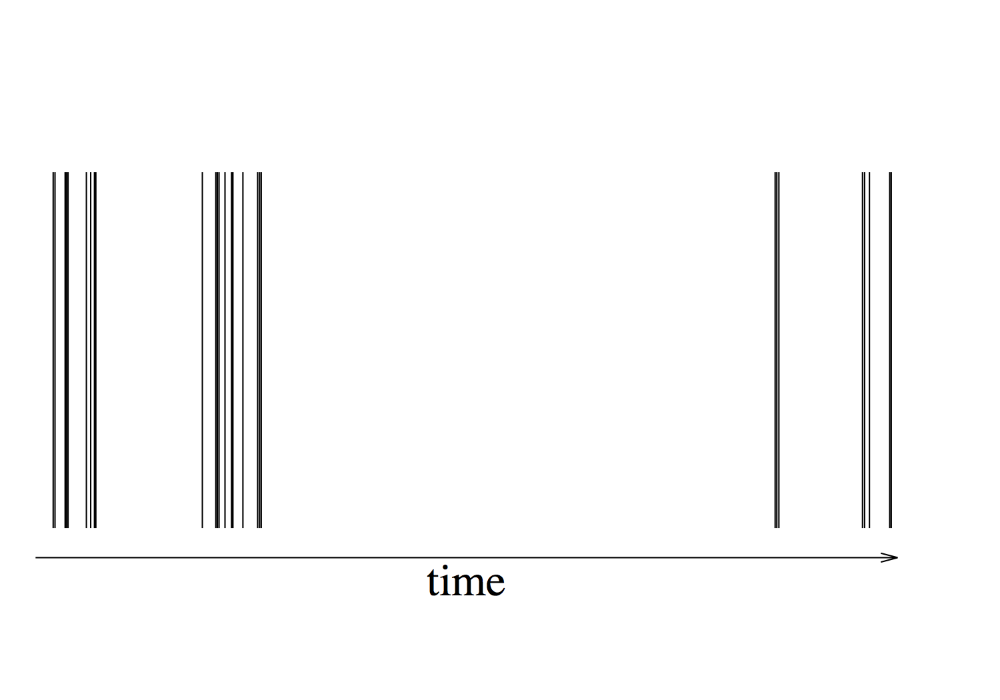

キーワード：ネットワーク，時系列，点過程，ラプラス変換
我々が成すソーシャル・ネットワークや他のネットワークの多くは、刻一刻と変化している（テンポラル・ネットワーク）。そして、多くのテンポラル・ネットワークのデータに共通する性質の1つに、バースト性がある (参考：バラバシの本「バースト！」）。あなたが誰かと会って会話をするとしよう。そのような会話イベントがいつ起こるかを記録してみると、会話は全くランダムなタイミングで起こるのではない。会話イベントの塊が短い間に起こり（バースト）、一方、会話イベントが全く起こらない長い時間間隔がある場合が多い（下図）。専門的に言うと、イベントの時間間隔は「ベキ則」的に分布している。
|  | |
| 図：バースト的なイベント時系列。縦棒は例えば2人の間の会話イベントが起こった時刻を表す。 | |
一方、そのようなことが知られる以前には、会話イベントは、チケットの販売窓口に人がパラパラと全くランダムに見えるかのように到着するように、バースト的でない「慣らされた」起こり方（専門的に言うと、「指数分布」的）をしていると仮定されてきた。よく分かっていなかったための単純化の仮定だったと言えよう。
ギレスピー・アルゴリズムは、会話イベントや化学反応イベントが起こっている相互作用系（人間の集団、分子の集団など）を効率よく、かつ誤差なく数値計算するための数理的な技術で、1970年代に開発された（日本語でも検索すると色々見つかる ）。
ギレスピー・アルゴリズムは、基本的には、バースト的ではないイベントを数値計算するための道具だ。一方、実際のデータ、特に人間の社会行動のデータは、往々にしてバースト的である。本研究では、ギレスピー・アルゴリズムをバースト的なイベント時系列の場合にも適用できるような新しいアルゴリズムを作った [Masuda & Rocha. SIAM Rev (2018)]。ラプラス変換と完全単調関数という数学的道具立てを利用した。